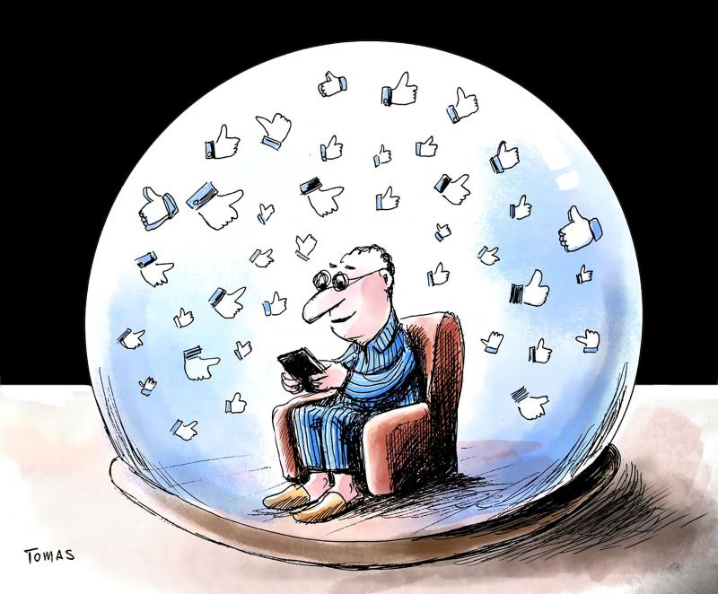
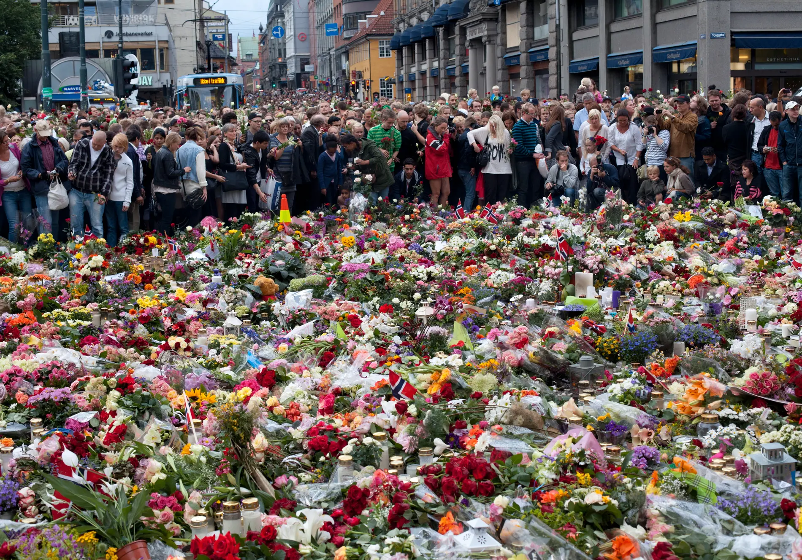
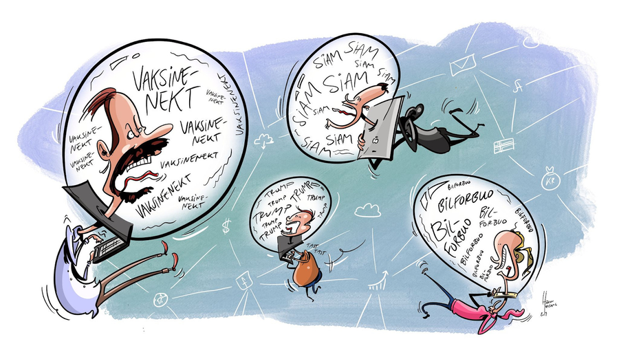

Ekkokamre

Ekkokamre er digitale miljøer der enkeltpersoner blir eksponert for informasjon, men hovedsakelig
fra
kilder som bekrefter og forsterker deres egne synspunkter, meninger og verdier. Dette fenomenet kan
ha
betydelige konsekvenser for demokratiet, spesielt når det er koblet til teknologi.
Ekkokamre kan føre til polarisering og splittelse i samfunnet ved å begrense eksponeringen for ulike
perspektiver og synspunkter. Når mennesker konsekvent blir utsatt for informasjon som bekrefter
deres
egne holdninger, kan det føre til forsterkning av eksisterende meninger og en sterkere tilhørighet
til
ens egen gruppe eller ideologi. Dette kan resultere i redusert villighet til å lytte til andre
synspunkter,
noe som er avgjørende for en sunn og fungerende demokratisk samtale.
Teknologien spiller en viktig rolle i utviklingen av ekkokamre. Algoritmer som brukes av sosiale
medieplattformer og digitale nyhetsaggregatorer, er utformet for å tilpasse innholdet som vises til
hver
bruker basert på deres tidligere atferd og interesser. Mens dette kan øke brukerens engasjement og
tilfredshet, kan det også føre til dannelse av ekkokamre ved å begrense mangfoldet av synspunkter
som
blir presentert.
I tillegg kan spredningen av falske nyheter og desinformasjon på nettet forsterke effekten av
ekkokamre.
Når mennesker er utsatt for falske eller villedende nyheter som bekrefter deres egne synspunkter,
kan
det
forsterke deres eksisterende holdninger og bidra til polarisering.
For å adressere utfordringene knyttet til ekkokamre og deres påvirkning på demokratiet, er det viktig å
fremme mediekompetanse og kritisk tenkning blant befolkningen. Videre må teknologiselskaper ta ansvar
for å utvikle algoritmer og plattformer som fremmer mangfoldet av synspunkter og muliggjør en sunn og
inkluderende offentlig samtale. Dette krever et samarbeid mellom regjering, teknologibransjen og
samfunnet
som helhet for å sikre at teknologien brukes til å styrke, ikke svekke, demokratiet.
“We are often ‘alone, together’, especially when online,”
― Jamie Bartlett, The People Vs Tech: How the Internet Is Killing Democracy
22. juli 2011

I det digitale rommet er det veldig lett å finne seg ekkokamre, som kan være globale. Det kan være
noen
få mennesker i hvert land som finner seg en liten nisje og en chattekanal eller Facebook-gruppe hvor
man
forsterker hverandre. Et eksempel på dette er Anders Behring Breivik.
Det er kjent at Anders Behring Breivik var en aktiv deltaker i ulike ekstreme online miljøer før han
utførte terrorangrepene i Norge i 2011. Disse miljøene kan betraktes som former for ekkokamre, der
Breivik ble utsatt for og engasjerte seg med ideer, synspunkter og verdier som bekreftet og
forsterket
hans ekstreme holdninger.
I disse ekkokamrene kunne Breivik ha blitt utsatt for hatefulle og radikale ideologier som fremmet
islamofobi, antimultikulturalisme og høyreekstremisme. Diskusjoner, propaganda og annet innhold i
disse
miljøene kan ha bidratt til å forme Breiviks synspunkter og motivasjon for å utføre
terrorangrepene.
I tillegg til å bli eksponert for ekstreme ideologier, kunne Breivik også ha funnet en følelse av
samhørighet og støtte blant likesinnede i disse ekkokamrene. Fellesskapet og solidariteten som ble
delt
innenfor disse miljøene, kunne ha forsterket hans følelse av rettferdiggjøring og oppmuntring til å
utføre voldelige handlinger for å fremme sitt verdenssyn.

Det er viktig å merke seg at selv om ekkokamre kan ha påvirket Breivik og bidratt til hans
radikalisering, var han også en selvstendig aktør som tok egne valg. Hans handlinger kan ikke bare
tilskrives innvirkningen fra ekkokamre alene, men en kombinasjon av flere faktorer, inkludert
personlige, sosiale og kulturelle.
Denne situasjonen understreker betydningen av å adressere spredningen av ekstreme ideologier og
hatefulle miljøer på nettet, samt behovet for å fremme mediekompetanse og kritisk tenkning for å
motvirke effektene av ekkokamre og radikalisering online.
Anders Behring Breiviks påvirkning av ekkokamre og radikalisering er en viktig illustrasjon av
teknologiens
rolle i formingen av ekstreme synspunkter og voldelige handlinger. Teknologi, spesielt sosiale
medieplattformer og nettbaserte diskusjonsfora, har spilt en betydelig rolle i spredningen av
ekstreme
ideologier og dannelsen av ekkokamre som Breivik deltok i.
Nettbaserte ekstreme miljøer har blitt arenaer der ekstreme synspunkter kan florerere, og dermed har
de
bidratt til å danne ekkokamre der likesinnede kan samles og forsterke sine radikale ideer.
Videre bruker teknologien avanserte algoritmer for å tilpasse innholdet som vises til hver bruker basert
på deres tidligere atferd og interesser. Dette kan føre til at personer som viser interesse for ekstreme
ideologier, blir eksponert for mer slikt innhold gjennom anbefalinger, og dermed bidra til å forsterke
ekkokamrene de er en del av.
Teknologien gir også en grad av anonymitet og tilgjengelighet som gjør det enkelt for enkeltpersoner å
delta i ekstreme miljøer uten frykt for konsekvenser eller oppdagelse. Dette kan føre til at personer
blir
radikalisert eller inspirert til voldelige handlinger uten direkte konfronterende sosiale og kulturelle
barrierer.
I tillegg gir teknologien ekstreme grupper og enkeltpersoner en global rekkevidde, slik at de kan samles
og kommunisere på tvers av geografiske og kulturelle grenser. Dette har ført til en økning i spredningen
av
ekstremistisk ideologi og dannelse av ekkokamre som kan påvirke enkeltpersoner over hele verden.
Samlet sett viser dette hvordan teknologien har spilt en betydelig rolle i dannelsen av ekkokamre og
radikalisering av enkeltpersoner som Anders Behring Breivik. Det understreker behovet for å adressere
utfordringene knyttet til spredningen av ekstreme ideologier online og fremme et trygt og inkluderende
digitalt miljø.